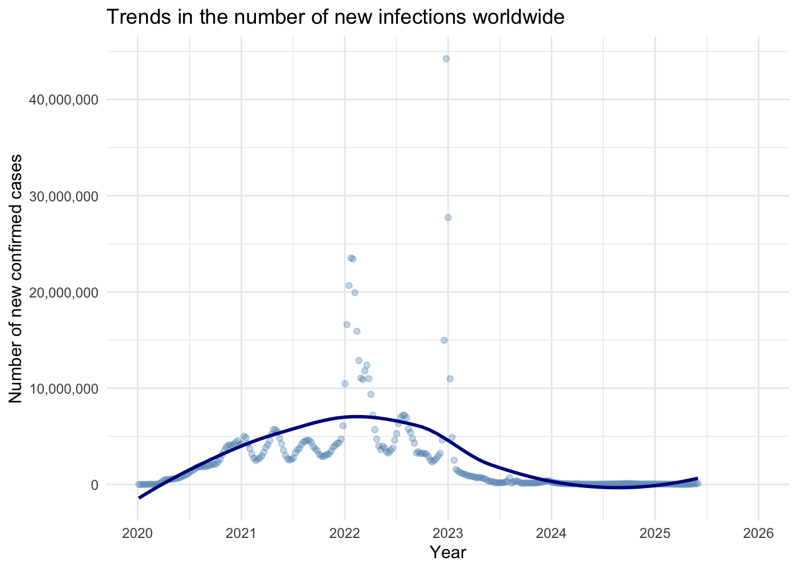
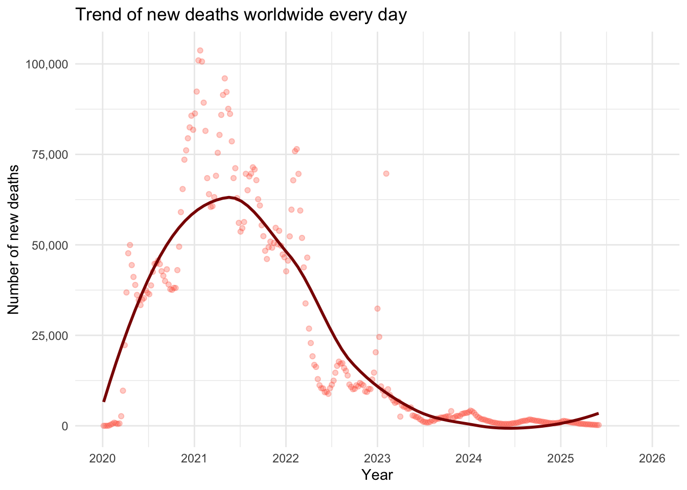
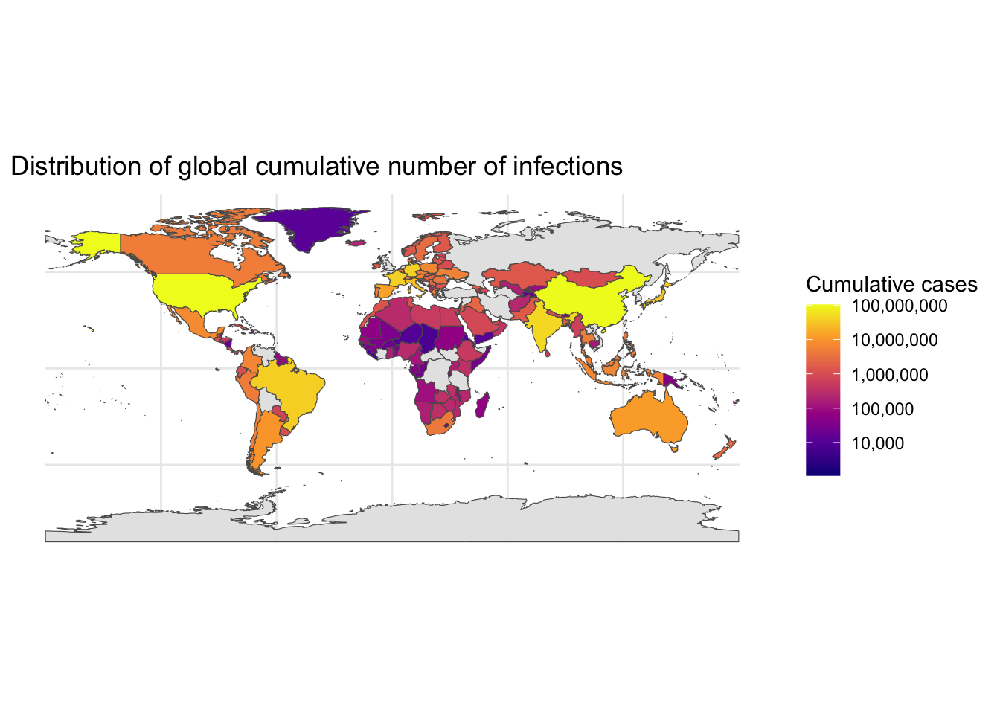
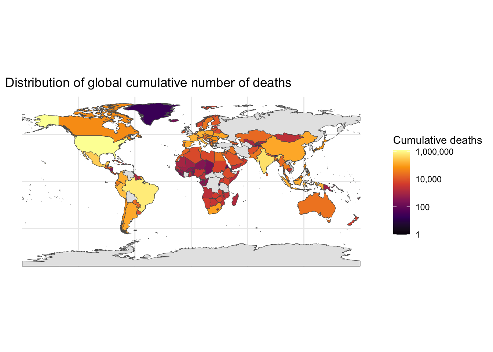
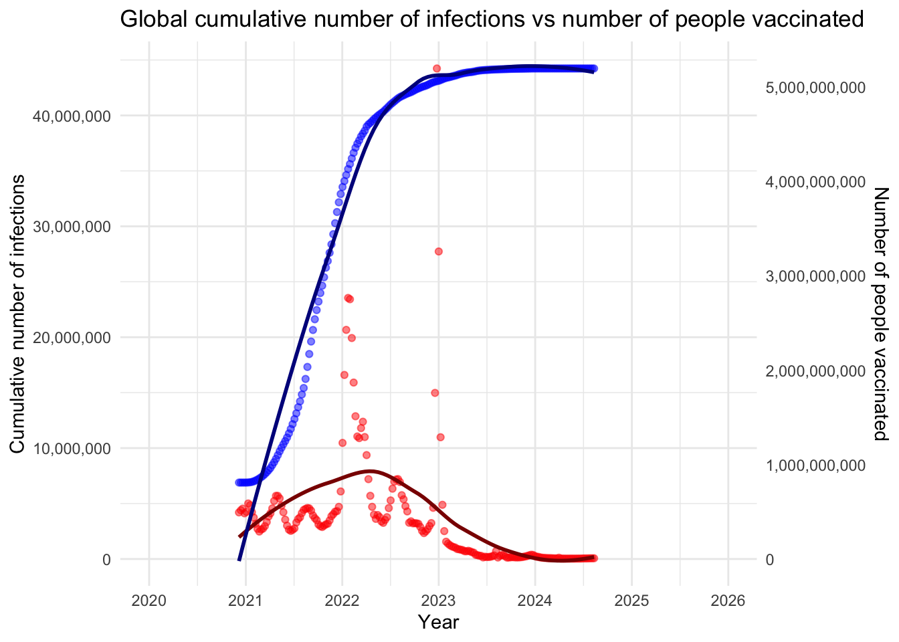

In this project, we will study the development trend of COVID-19 from 2020 to 2025. Does the mortality rate decrease over time? Is it mainly due to the popularization of vaccination? The reason I chose this topic is that COVID-19 is one of the most concerned infectious diseases in the past decade. Its rapid spread, wide range of affected areas, long duration, etc. have attracted the attention of many people in society.
Data description
The data for this analysis mainly comes from the COVID-19 dashboard data published on the World Health Organization’s official website. These data are suitable for analysis of the trend of COVID-19 infection in the past five years, including the changes in the number of new deaths and infections over time, and the comparison of the cumulative number of deaths and infections in each region.
Datasets:
Weekly COVID-19 cases and deaths by date reported to WHO:
- Source: World Health Organization (WHO)
- Content: New cases and deaths, cumulative cases and deaths, as counted by the different regions of World Health Organization every week.
- Last Updated: 2025
- Data Type: Census
- Limitations: Due to differences in case discovery, definitions, and testing strategies in different places, there may be some deviations in the statistical data.
- Privacy/Ethics: Data is publicly available and not of risk regarding privacy. Anonymization or falsification of content is prohibited.
Data Dictionary:
Date_reported: The date of reported cases statistics weekly
Country_code: The code of countries
Country: The country where the case occurred
WHO_region: The region of the WHO
New_cases: New infections per week
Cumulative_cases: New cumulative infections per week
New deaths: New deaths per week
Cumulative_deaths: New cumulative deaths per week
Number of people who completed the initial COVID-19 vaccination protocol:
- Source: Our World in data
- Content: Daily data from various countries on people fully vaccinated with covid
- Last Updated: 2024
- Data Type: Census
- Limitations: Due to the different levels of development in different regions, the statistical data may be biased.
- Privacy/Ethics: Data is publicly available and not of risk regarding privacy. Anonymization or falsification of content is prohibited.
Data Dictionary:
Entity: Statistical region (continent)
Code: The code of collect and process data
Day: Reported date
people_fully_vaccinated: The number of vaccinated people
Rows: 67920 Columns: 8
── Column specification ────────────────────────────────────────────────────────
Delimiter: ","
chr (3): Country_code, Country, WHO_region
dbl (4): New_cases, Cumulative_cases, New_deaths, Cumulative_deaths
date (1): Date_reported
ℹ Use `spec()` to retrieve the full column specification for this data.
ℹ Specify the column types or set `show_col_types = FALSE` to quiet this message.
# Step1: replace the value of NA into "0"who_data[, sapply(who_data, is.numeric)] <-lapply(who_data[, sapply(who_data, is.numeric)], function(x) ifelse(is.na(x), 0, x))# Step2: transform date typewho_data$Date_reported <-as.Date(who_data$Date_reported)vac_data$Date_reported <-as.Date(vac_data$Day)# Step3: Aggregate global datalibrary(dplyr)
Attaching package: 'dplyr'
The following objects are masked from 'package:stats':
filter, lag
The following objects are masked from 'package:base':
intersect, setdiff, setequal, union
weekly_global <- who_data %>%group_by(Date_reported) %>%summarise(New_cases =sum(New_cases, na.rm =TRUE),New_deaths =sum(New_deaths, na.rm =TRUE),Cumulative_cases =sum(New_cases, na.rm =TRUE),Cumulative_deaths =sum(New_deaths, na.rm =TRUE) )# Step4: Aggregate every country datacountry_data <- who_data %>%group_by(Country) %>%filter(Date_reported ==max(Date_reported)) %>%select(Date_reported, Country, Cumulative_cases, Cumulative_deaths)# Step5: get world map data (country outlines)library(sf)
Linking to GEOS 3.13.0, GDAL 3.8.5, PROJ 9.5.1; sf_use_s2() is TRUE
library(rnaturalearth)library(rnaturalearthdata)
Attaching package: 'rnaturalearthdata'
The following object is masked from 'package:rnaturalearth':
countries110
world <-ne_countries(scale ="medium", returnclass ="sf")# Step6: merge map data and WHO statisticsworld_data <-left_join(world, country_data, by =c("name"="Country"))# Step6: get the vaccinated data of the whole worldworld_vac <- vac_data %>%filter(Entity =="World") %>%select(Date_reported, people_fully_vaccinated)# Step7: merge two datasetsmerged_data <-inner_join(weekly_global, world_vac, by ="Date_reported")# Step8: save the data fileswrite.csv(merged_data, "data/processed_data.csv", row.names =FALSE)
Wickham H, François R, Henry L, Müller K, Vaughan D (2023). dplyr: A Grammar of Data Manipulation. R package version 1.1.4, https://CRAN.R-project.org/package=dplyr.
Pebesma, E., & Bivand, R. (2023). Spatial Data Science: With Applications in R. Chapman and Hall/CRC. https://doi.org/10.1201/9780429459016
On December 12, 2019, a group of patients with atypical pneumonia appeared in Wuhan, Hubei Province, China. Since then, similar patients have continued to appear. On January 10, 2020, the World Health Organization used “2019 Novel Coronavirus” or “2019-nCoV” to refer to this epidemic (CDC, 2024). At the same time, the epidemic spread rapidly in 2020 and swept the world until the situation gradually stabilized in 2022 and countries resumed normal economic operations. This epidemic has almost disrupted daily life, affected the global medical system, and hit countries economically. It is the most serious infectious disease in the past decade. This report mainly analyzes the development trend of COVID-19 through the data on the number of new infections and deaths released by the WHO from 2020 to 2025, including the growth pattern of cases and the impact of subsequent vaccine popularization on the epidemic. Through the analysis of five years of key data and indicators, we can not only understand the evolution of the epidemic, but also provide experience and lessons for future global health emergencies.
Motivation
It is undeniable that COVID-19 is the most serious infectious disease in the past decade, exposing the fragility of medical infrastructure and policy coordination for emergency response. Priya et. al.(2021) stated that the incident had a significant impact on energy, economy and environment, including the collapse of energy markets leading to oversupply and falling oil prices. In addition, the epidemic has been repeated, and the emergence of variants has made case studies more difficult. In addition, there are differences in economic level and culture between regions, resulting in different response methods and results in various places.
This report systematically sorts out the changing trends and key nodes of the epidemic in the past five years, fully evaluates the epidemic prevention in this incident, provides experience and lessons for the development of global public health, and establishes a sustainable development system in the future.
Methodology
This report mainly uses the latest weekly reports of COVID-19 cases and deaths published on the WHO website. Focus on observing and analyzing relevant indicators, including weekly new cases and deaths, cumulative new cases and deaths, and mortality rates, which are mainly divided into three periods: initial outbreak period, normalized prevention and control period, full release period, and stable control period.
Analysis method:
Mortality rate = cumulative number of deaths/cumulative number of infected cases
Draw a time series of new deaths and infections: get a preliminary understanding of the development trend of the new crown.
Atlas of infected cases: compare the severity of each region and evaluate the response.
A dual axis graph： Study the relationship between vaccination and the number of infections
Analysis
1.The time series of new deaths and infections
library(ggplot2)library(scales)
Attaching package: 'scales'
The following object is masked from 'package:readr':
col_factor
# 1. Scatter plot of new infections + trend lineggplot(weekly_global, aes(x = Date_reported, y = New_cases)) +geom_point(alpha =0.3, color ="steelblue") +geom_smooth(method ="loess", se =FALSE, color ="darkblue", size =1) +scale_x_date(date_breaks ="1 year",date_labels ="%Y",limits =as.Date(c("2020-01-01", "2025-12-31")) ) +scale_y_continuous(labels = scales::comma) +labs(title ="Trends in the number of new infections worldwide",x ="Year", y ="Number of new confirmed cases" ) +theme_minimal()
Warning: Using `size` aesthetic for lines was deprecated in ggplot2 3.4.0.
ℹ Please use `linewidth` instead.
`geom_smooth()` using formula = 'y ~ x'

Figure 1: Trend in the number of new infections worldwide
According to Figure 1, the number of newly confirmed cases worldwide shows the following trends between 2020 and 2025:
2020: At the beginning of the epidemic, the number of new cases was low, but the infection rate was fast.
2021: The number of new cases increased significantly, reflecting the acceleration of virus transmission or the improvement of detection capabilities.
2022: The number of new cases continued to rise, which is the peak of the epidemic.
2023: The number of new cases began to decline, which may benefit from vaccination or prevention and control measures.
2024-2025: The number of new cases tended to stabilize and remained at a low level, indicating that the epidemic may enter the normalization stage.
In conclusion, it shows that the overall global epidemic presents a curve of “first a sharp rise and then a gradual decline”. The decline in data since 2022 reflects the impact of public health measures and vaccination, showing that the global epidemic situation is gradually improving, but we still need to continue to pay attention to potential mutant strains and the long-term effects of prevention and control measures.
# 2. Scatter plot + trend line of new deathsggplot(weekly_global, aes(x = Date_reported, y = New_deaths)) +geom_point(alpha =0.3, color ="tomato") +geom_smooth(method ="loess", se =FALSE, color ="darkred", size =1) +scale_x_date(date_breaks ="1 year",date_labels ="%Y",limits =as.Date(c("2020-01-01", "2025-12-31")) ) +scale_y_continuous(labels = scales::comma) +labs(title ="Trend of new deaths worldwide every day",x ="Year", y ="Number of new deaths" ) +theme_minimal()
`geom_smooth()` using formula = 'y ~ x'

Figure 2: Trend of new deaths worldwide every day
According to Figure 2, the trend analysis of the number of new deaths per day around the world (2020–2025) is shown:
2020: The number of deaths surged in the early stages of the epidemic, reflecting the pressure on the medical system and the lack of effective intervention measures.
2021: In the outbreak period, there are variants and uneven distribution of vaccines, which may cause fluctuations.
2022: Gradually began to decline due to effective treatment and vaccination.
2023–2025: Stable at a low level, indicating that the epidemic has become normalized.
In short, the early peak indicates that the world’s response to the emergency health incident was insufficient, and the gradual decline in the later period proves the effectiveness of medical and public health measures.
2. Atlas of infected cases and deaths
# 1. Map the cumulative number of infectionsggplot(world_data) +geom_sf(aes(fill = Cumulative_cases)) +scale_fill_viridis_c(option ="plasma", trans ="log10", labels = comma, na.value ="grey90") +labs(title ="Distribution of global cumulative number of infections",fill ="Cumulative cases") +theme_minimal()
Warning in scale_fill_viridis_c(option = "plasma", trans = "log10", labels =
comma, : log-10 transformation introduced infinite values.

Figure 3: Distribution of global cumulative number of infections
# 2. Map the cumulative number of deathsggplot(world_data) +geom_sf(aes(fill = Cumulative_deaths)) +scale_fill_viridis_c(option ="inferno", trans ="log10", labels = comma, na.value ="grey90") +labs(title ="Distribution of global cumulative number of deaths",fill ="Cumulative deaths") +theme_minimal()
Warning in scale_fill_viridis_c(option = "inferno", trans = "log10", labels =
comma, : log-10 transformation introduced infinite values.

Figure 4: Distribution of global cumulative number of deaths
According to Figure 3 and Figure 4, the global cumulative infection and death distribution is shown:
Cumulative infection distribution
High-incidence areas: densely populated areas or areas with weak prevention and control.
Medium-incidence areas: Europe, Southeast Asia, related to the spread of mutant strains.
Low-incidence areas: remote islands or countries with early strict blockades.
Cumulative death distribution
High mortality area: countries with medical overload or delayed response.
Medium mortality area: areas hit hard by aging or mutant strains.
Low mortality area: isolated or strong prevention and control areas.
In conclusion, the number of deaths is not completely positively correlated with the number of infections, which depends on the level of medical care and vaccination. At the same time, long-term trends also reveal the profound impact of resource inequality on the outcome of the epidemic. The World Health Organization needs strategic planning and pays attention to the health status of economically underdeveloped areas.
3. The relationship between infections cases and vaccinated
max_cases <-max(merged_data$Cumulative_cases, na.rm =TRUE)max_vax <-max(merged_data$people_fully_vaccinated, na.rm =TRUE)merged_data <- merged_data %>%mutate(vax_scaled = people_fully_vaccinated * max_cases / max_vax )ggplot(merged_data, aes(x = Date_reported)) +geom_point(aes(y = Cumulative_cases), color ="red", alpha =0.5) +geom_smooth(aes(y = Cumulative_cases), method ="loess", se =FALSE, color ="darkred") +geom_point(aes(y = vax_scaled), color ="blue", alpha =0.5) +geom_smooth(aes(y = vax_scaled), method ="loess", se =FALSE, color ="darkblue") +scale_x_date(date_breaks ="1 year",date_labels ="%Y",limits =as.Date(c("2020-01-01", "2025-12-31")) ) +scale_y_continuous(name ="Cumulative number of infections",labels = comma,sec.axis =sec_axis(~ . * max_vax / max_cases,name ="Number of people vaccinated", labels = comma) ) +scale_color_manual(name ="Type",values =c("Number of infections"="red", "Number of people vaccinated"="blue") ) +labs(title ="Global cumulative number of infections vs number of people vaccinated",x ="Year" ) +theme_minimal() +theme(legend.position ="bottom")
`geom_smooth()` using formula = 'y ~ x'
`geom_smooth()` using formula = 'y ~ x'
Warning: No shared levels found between `names(values)` of the manual scale and the
data's colour values.

Figure 5: Global cumulative number of infections vs number of people vaccinated
According to Figure 5, the relationship between global cumulative infections and vaccination is shown 2020: Infections increased, and vaccines were not widely available.
2021: Infections surged and the virus mutated, and vaccination started
2022: Infections reached their peak, vaccination popularization accelerated, and the growth rate slowed down.
2023-2025: The effectiveness of medical and public health measures gradually reduced infections, and vaccine coverage reached a peak at this time.
In short, this shows that vaccination is strongly correlated with the decline in infections, but there is a time lag.
Conclusions and Recommendations
Through the analysis of relevant charts, we understand the overall trend of the development of the epidemic. The peak period is concentrated in 2021-2022. At the same time, since 2020, due to the popularization of vaccines, the recovery of medical systems in various countries and the effective implementation of prevention and control measures, the epidemic has begun to improve, and gradually stabilized and entered a normalized period between 2024 and 2025. In addition, vaccination has played a key role in reducing mortality and promoting social reopening, but unequal access to vaccines and inconsistent policy responses have hindered global economic recovery.
By reflecting on this global emergency, the following suggestions are made:
Increase international cooperation in vaccine distribution and data sharing;
Strengthen public health infrastructure to quickly expand and respond to emergencies;
Strengthen exchanges between countries to implement economic recovery plans；
Communities can set up psychological counseling rooms to pay attention to people’s mental health.
References
CDC. (2024). CDC Museum COVID-19 Timeline. https://www.cdc.gov/museum/timeline/covid19.html
Priya, S. S., Cuce, E., & Sudhakar, K. (2021). A perspective of COVID 19 impact on global economy, energy and environment. International Journal of Sustainable Engineering, 14(6), 1290-1305. https://doi.org/10.1080/19397038.2021.1964634
H. Wickham. ggplot2: Elegant Graphics for Data Analysis. Springer-Verlag New York, 2016.
Tell us about parts of your data processing or analysis that weren’t “sexy” and wouldn’t typically be included in a blog post.
When describing the development trend of COVID-19, we can compare the infection trends of several typical countries to analyze the global situation; or focus on the turning points of change and analyze them in detail in combination with events or important achievements.
In addition, the data on the number of people vaccinated initially is used to analyze the relationship between vaccines and the number of infections. The data on the number of people vaccinated initially can be combined with the data on complete vaccinations or booster shots to further analyze the role of vaccines.
Q6
Were there any challenges that you faced in conducting this analysis. These may take the form of data limitations or coding challenges?
The main challenge is that when drawing the atlas, there is no latitude and longitude in the original data, only the country name, so I am proud to have learned to install and use rnaturalearth and rnaturalearthdata.
In addition, when drawing a chart, sometimes such data is displayed, such as 2e+07, which made me learn scale_y_continuous() to set the number format.
Finally, when I wanted to show the relationship between vaccination and the number of infections, I learned to use ‘sec.axis’ to scale one side of the data to draw a dual-axis chart.
Q7
Tell us about any imperfect parts of your work and how you would like to expand or improve this analysis in future? Be clear about any limitations or aspects of your analysis that fell beyond scope.
When analyzing the relationship between vaccination and the number of infections, the strong correlation was demonstrated through the aggregated statistical data, and no further analysis was performed. I hope to learn regression analysis and other methods to further strengthen the analysis. In addition, as the epidemic develops, there are many variants and different vaccines being developed, and more relevant data can be collected to analyze the effects of different vaccines on different variants.
Q8
Also submit 4 earlier versions of your assignment to show your iterative process. These should be your messy versions and include exploratory code. We recommend you save these files as you progress through your assignment. Provide a short overview for markers of what you fixed/learnt/improved/changed between each file.